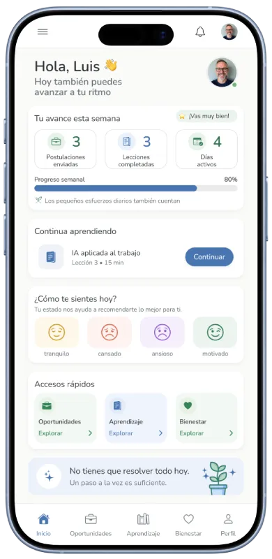
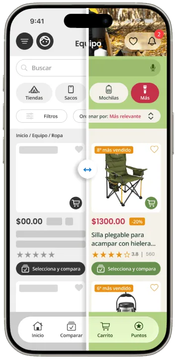

Diseño UX enfocado en resultados
Curiosidad, estrategia y experiencia para diseñar soluciones centradas en las personas.
Ver casos de estudio
Casos de estudio
Experiencias diseñadas para resolver problemas reales
Casos UX enfocados en eCommerce, toma de decisiones y diseño centrado en el usuario.

Reinicio 50+
Acompañamiento integral para mayores de 50 años en transición laboral.
Ver caso →
Sitio CamPack
Estructura y navegación adaptada a distintos dispositivos
Ver caso →
App CamPack
Optimización de búsqueda y decisión en eCommerce
Ver caso →Experiencia profesional
Productos digitales creados para distintas marcas
Aplicaciones, sitios web e identidad visual para programas de lealtad y experiencias digitales.

Siempre aprendiendo. Siempre construyendo.
Sobre mí
Diseño experiencias digitales que equilibran usuarios y negocio.
De la producción gráfica al diseño de experiencias digitales, mi trayectoria ha estado impulsada por la curiosidad y la mejora continua.
Transformo procesos complejos en experiencias claras, funcionales y alineadas con las necesidades de usuarios y negocio.
30+
Años de evolución digital
UX/UI
eCommerce & Loyalty
Contacto
¿Buscas mejorar la experiencia de tus productos digitales?
Estoy disponible para colaborar en proyectos de UX/UI, eCommerce y experiencias digitales centradas en el usuario.